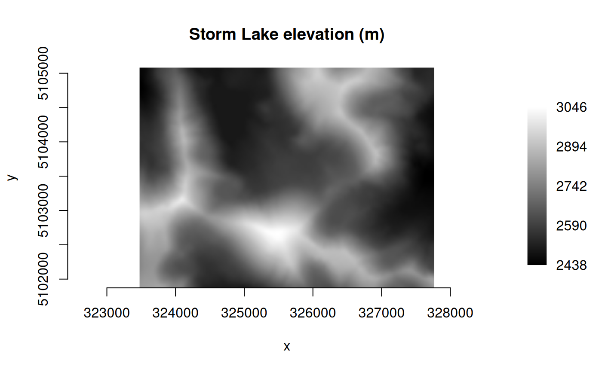
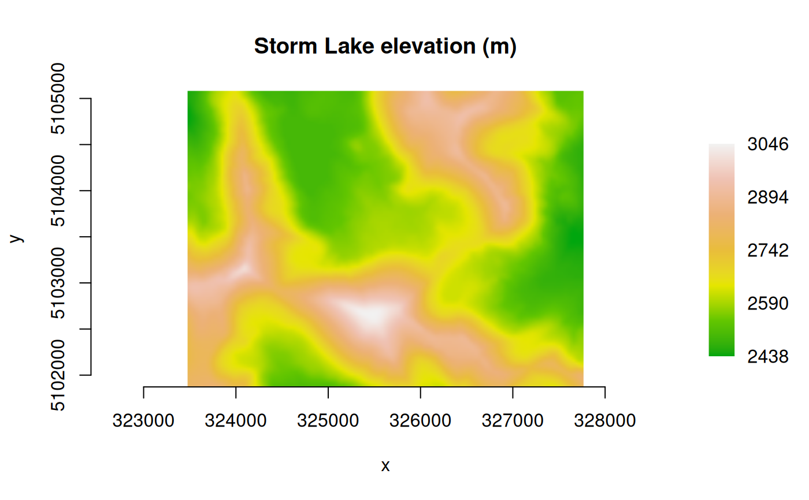

plot_raster() displays raster data using base graphics.
Usage
plot_raster(
data,
xsize = NULL,
ysize = NULL,
nbands = NULL,
max_pixels = 2.5e+07,
col_tbl = NULL,
maxColorValue = 1,
normalize = TRUE,
minmax_def = NULL,
minmax_pct_cut = NULL,
col_map_fn = NULL,
xlim = NULL,
ylim = NULL,
interpolate = TRUE,
asp = 1,
axes = TRUE,
main = "",
xlab = "x",
ylab = "y",
xaxs = "i",
yaxs = "i",
legend = FALSE,
digits = 2,
na_col = rgb(0, 0, 0, 0),
...
)Arguments
- data
Either a
GDALRasterobject from which data will be read, or a numeric vector of pixel values arranged in left to right, top to bottom order, or a list of band vectors. If input is vector or list, the information in attributegiswill be used if present (seeread_ds()), potentially ignoring values below forxsize,ysize,nbands.- xsize
The number of pixels along the x dimension in
data. Ifdatais aGDALRasterobject, specifies the size at which the raster will be read (used for argumentout_xsizeinGDALRaster$read()). By default, the entire raster will be read at full resolution.- ysize
The number of pixels along the y dimension in
data. Ifdatais aGDALRasterobject, specifies the size at which the raster will be read (used for argumentout_ysizeinGDALRaster$read()). By default, the entire raster will be read at full resolution.- nbands
The number of bands in
data. Must be either 1 (grayscale) or 3 (RGB). For RGB,dataare interleaved by band. IfnbandsisNULL(the default), thennbands = 3is assumed if the input data contain 3 bands, otherwise band 1 is used.- max_pixels
The maximum number of pixels that the function will attempt to display (per band). An error is raised if
(xsize * ysize)exceeds this value. Setting toNULLturns off this check.- col_tbl
A color table as a matrix or data frame with four or five columns. Column 1 contains the numeric pixel values. Columns 2:4 contain the intensities of the red, green and blue primaries (
0:1by default, or use integer0:255by settingmaxColorValue = 255). An optional column 5 may contain alpha transparency values,0for fully transparent to1(ormaxColorValue) for opaque (the default if column 5 is missing). Ifdatais aGDALRasterobject, a built-in color table will be used automatically if one exists in the dataset.- maxColorValue
A number giving the maximum of the color values range in
col_tbl(see above). The default is1.- normalize
Logical.
TRUEto rescale pixel values so that their range is[0,1], normalized to the full range of the pixel data by default (min(data),max(data), per band). Ignored ifcol_tblis used. SetnormalizetoFALSEif a color map function is used that operates on raw pixel values (seecol_map_fnbelow).- minmax_def
Normalize to user-defined min/max values (in terms of the pixel data, per band). For single-band grayscale, a numeric vector of length two containing min, max. For 3-band RGB, a numeric vector of length six containing b1_min, b2_min, b3_min, b1_max, b2_max, b3_max.
- minmax_pct_cut
Normalize to a truncated range of the pixel data using percentile cutoffs (removes outliers). A numeric vector of length two giving the percentiles to use (e.g.,
c(2, 98)). Applied per band. Ignored ifminmax_defis used.- col_map_fn
An optional color map function (default is
grDevices::grayfor single-band data orgrDevices::rgbfor 3-band). Ignored ifcol_tblis used. SetnormalizetoFALSEif using a color map function that operates on raw pixel values.- xlim
Numeric vector of length two giving the x coordinate range. If
datais aGDALRasterobject, the default is the raster xmin, xmax in georeferenced coordinates, otherwise the default uses pixel/line coordinates (c(0, xsize)).- ylim
Numeric vector of length two giving the y coordinate range. If
datais aGDALRasterobject, the default is the raster ymin, ymax in georeferenced coordinates, otherwise the default uses pixel/line coordinates (c(ysize, 0)).- interpolate
Logical indicating whether to apply linear interpolation to the image when drawing (default
TRUE).- asp
Numeric. The aspect ratio y/x (see
?plot.window).- axes
Logical.
TRUEto draw axes (the default).- main
The main title (on top).
- xlab
Title for the x axis (see
?title).- ylab
Title for the y axis (see
?title).- xaxs
The style of axis interval calculation to be used for the x axis (see
?par).- yaxs
The style of axis interval calculation to be used for the y axis (see
?par).- legend
Logical indicating whether to include a legend on the plot. Currently, legends are only supported for continuous data. A color table will be used if one is specified or the raster has a built-in color table, otherwise the value for
col_map_fnwill be used.- digits
The number of digits to display after the decimal point in the legend labels when raster data are floating point.
- na_col
Color to use for
NAas a 7- or 9-character hexadecimal code. The default is transparent ("#00000000", the return value ofrgb(0,0,0,0)).- ...
Other parameters to be passed to
plot.default().
Details
By default, contrast enhancement by stretch to min/max is applied when
the input data are single-band grayscale with any raster data type, or
three-band RGB with raster data type larger than Byte. The minimum/maximum
of the input data are used by default (i.e., no outlier removal). No stretch
is applied by default when the input is an RGB byte raster. These defaults
can be overridden by specifying either the minmax_def argument
(user-defined min/max per band), or the minmax_pct_cut argument (ignore
outlier pixels based on a percentile range per band). These settings (and
the normalize argument) are ignored if a color table is used.
Note
plot_raster() uses the function graphics::rasterImage() for plotting
which is not supported on some devices (see ?rasterImage).
If data is an object of class GDALRaster, then plot_raster() will
attempt to read the entire raster into memory by default (unless the number
of pixels per band would exceed max_pixels).
A reduced resolution overview can be read by setting xsize, ysize
smaller than the raster size on disk.
(If data is instead specified as a vector of pixel values, a reduced
resolution overview would be read by setting out_xsize and out_ysize
smaller than the raster region defined by xsize, ysize in a call to
GDALRaster$read()).
The GDAL_RASTERIO_RESAMPLING configuration option can be
defined to override the default resampling (NEAREST) to one of BILINEAR,
CUBIC, CUBICSPLINE, LANCZOS, AVERAGE or MODE, for example:
set_config_option("GDAL_RASTERIO_RESAMPLING", "BILINEAR")Examples
## Elevation
elev_file <- system.file("extdata/storml_elev.tif", package="gdalraster")
ds <- new(GDALRaster, elev_file)
# grayscale
plot_raster(ds, legend=TRUE, main="Storm Lake elevation (m)")

# color ramp from user-defined palette
elev_pal <- c("#00A60E","#63C600","#E6E600","#E9BD3B",
"#ECB176","#EFC2B3","#F2F2F2")
ramp <- scales::colour_ramp(elev_pal, alpha=FALSE)
plot_raster(ds, col_map_fn=ramp, legend=TRUE,
main="Storm Lake elevation (m)")

ds$close()
## Landsat band combination
b4_file <- system.file("extdata/sr_b4_20200829.tif", package="gdalraster")
b5_file <- system.file("extdata/sr_b5_20200829.tif", package="gdalraster")
b6_file <- system.file("extdata/sr_b6_20200829.tif", package="gdalraster")
band_files <- c(b6_file, b5_file, b4_file)
r <- vector("integer")
for (f in band_files) {
ds <- new(GDALRaster, f)
dm <- ds$dim()
r <- c(r, read_ds(ds))
ds$close()
}
plot_raster(r, xsize=dm[1], ysize=dm[2], nbands=3,
main="Landsat 6-5-4 (vegetative analysis)")
 ## LANDFIRE Existing Vegetation Cover (EVC) with color map
evc_file <- system.file("extdata/storml_evc.tif", package="gdalraster")
# colors from the CSV attribute table distributed by LANDFIRE
evc_csv <- system.file("extdata/LF20_EVC_220.csv", package="gdalraster")
vat <- read.csv(evc_csv)
head(vat)
#> VALUE CLASSNAMES R G B RED GREEN
#> 1 -9999 Fill-NoData 255 255 255 1.000000 1.000000
#> 2 11 Open Water 0 0 255 0.000000 0.000000
#> 3 12 Snow/Ice 159 161 240 0.623529 0.631373
#> 4 13 Developed-Upland Deciduous Forest 64 61 168 0.250980 0.239216
#> 5 14 Developed-Upland Evergreen Forest 68 79 137 0.266667 0.309804
#> 6 15 Developed-Upland Mixed Forest 102 119 205 0.400000 0.466667
#> BLUE
#> 1 1.000000
#> 2 1.000000
#> 3 0.941176
#> 4 0.658824
#> 5 0.537255
#> 6 0.803922
vat <- vat[,c(1,6:8)]
ds <- new(GDALRaster, evc_file)
plot_raster(ds, col_tbl=vat, interpolate=FALSE,
main="Storm Lake LANDFIRE EVC")
ds$close()
## LANDFIRE Existing Vegetation Cover (EVC) with color map
evc_file <- system.file("extdata/storml_evc.tif", package="gdalraster")
# colors from the CSV attribute table distributed by LANDFIRE
evc_csv <- system.file("extdata/LF20_EVC_220.csv", package="gdalraster")
vat <- read.csv(evc_csv)
head(vat)
#> VALUE CLASSNAMES R G B RED GREEN
#> 1 -9999 Fill-NoData 255 255 255 1.000000 1.000000
#> 2 11 Open Water 0 0 255 0.000000 0.000000
#> 3 12 Snow/Ice 159 161 240 0.623529 0.631373
#> 4 13 Developed-Upland Deciduous Forest 64 61 168 0.250980 0.239216
#> 5 14 Developed-Upland Evergreen Forest 68 79 137 0.266667 0.309804
#> 6 15 Developed-Upland Mixed Forest 102 119 205 0.400000 0.466667
#> BLUE
#> 1 1.000000
#> 2 1.000000
#> 3 0.941176
#> 4 0.658824
#> 5 0.537255
#> 6 0.803922
vat <- vat[,c(1,6:8)]
ds <- new(GDALRaster, evc_file)
plot_raster(ds, col_tbl=vat, interpolate=FALSE,
main="Storm Lake LANDFIRE EVC")
ds$close()